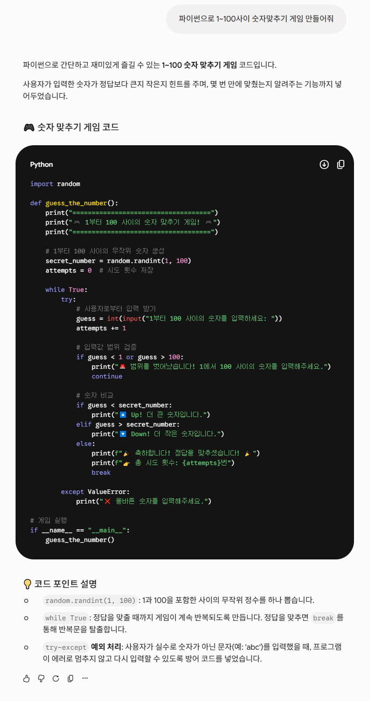
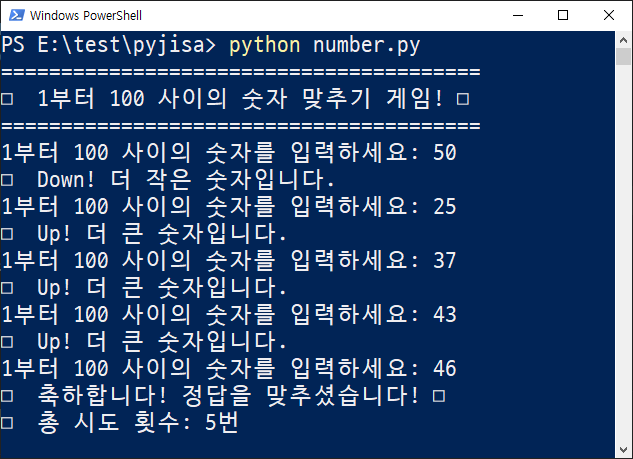
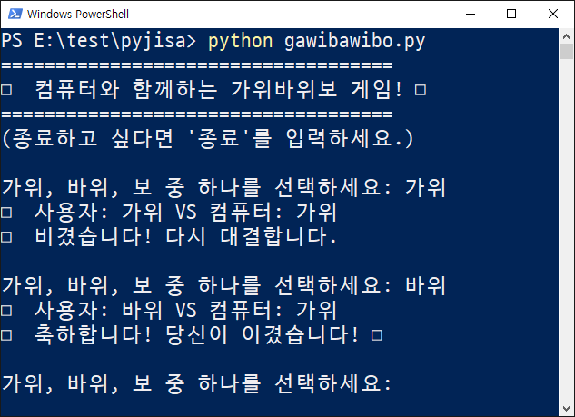
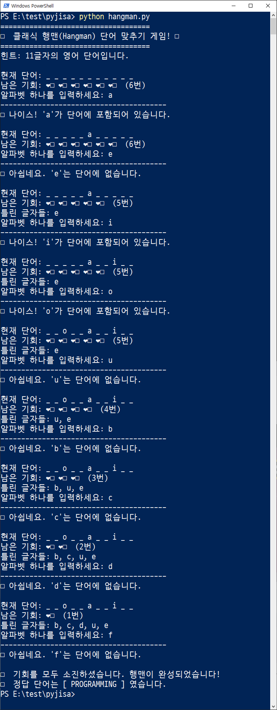
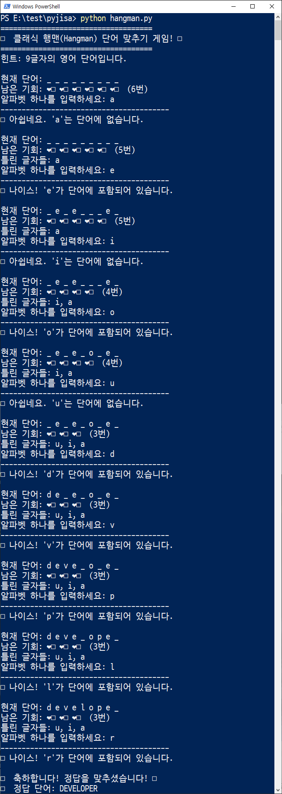
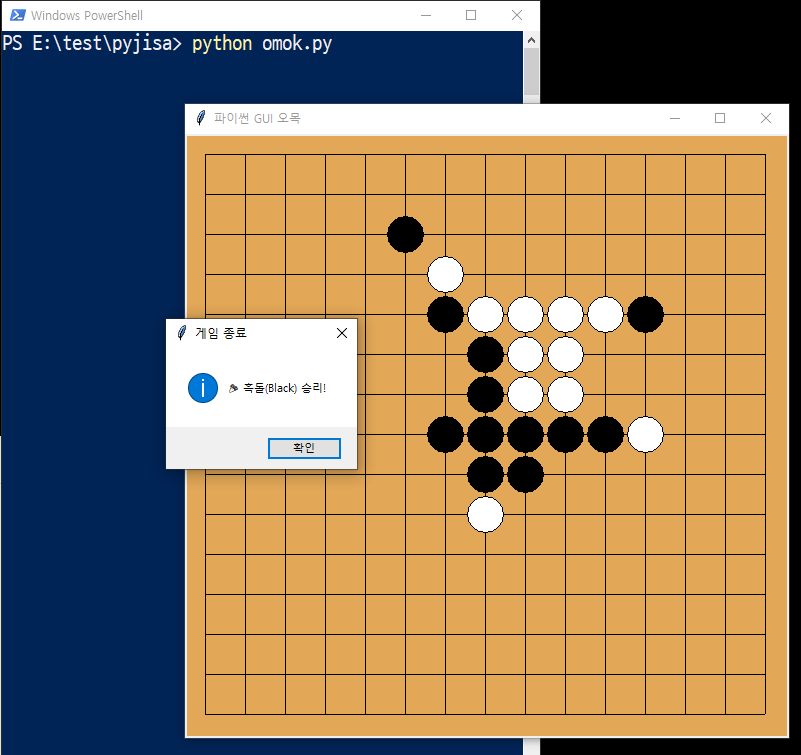
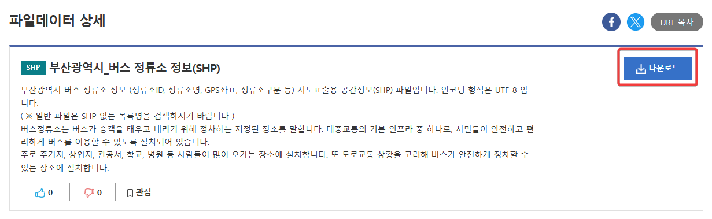
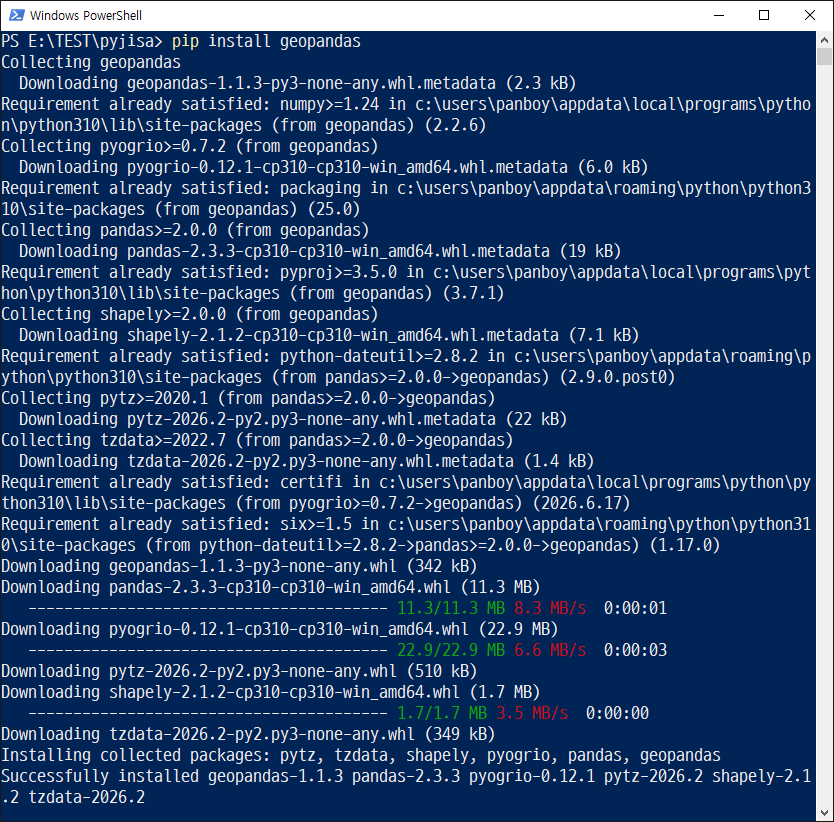
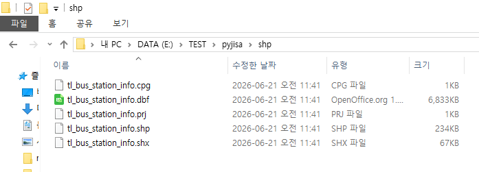
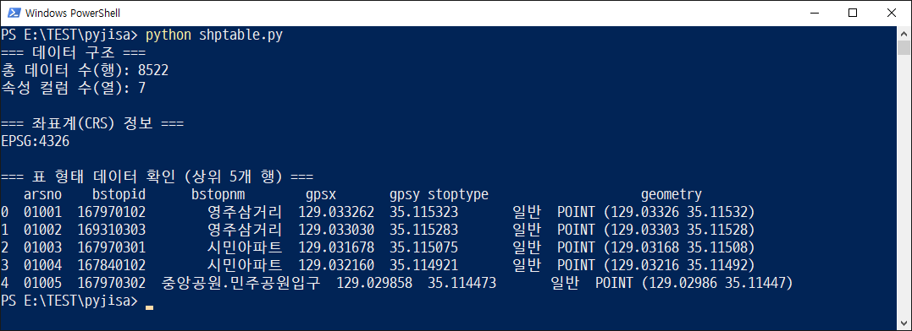

AI로 만든 파이썬 프로그램들
숫자맞추기 게임
Gemini에게 물어보기

gemini가 알려준 파이썬 코드
import random
def guess_the_number():
print("====================================")
print("🎮 1부터 100 사이의 숫자 맞추기 게임! 🎮")
print("====================================")
# 1부터 100 사이의 무작위 숫자 생성
secret_number = random.randint(1, 100)
attempts = 0 # 시도 횟수 저장
while True:
try:
# 사용자로부터 입력 받기
guess = int(input("1부터 100 사이의 숫자를 입력하세요: "))
attempts += 1
# 입력값 범위 검증
if guess < 1 or guess > 100:
print("🚨 범위를 벗어났습니다! 1에서 100 사이의 숫자를 입력해주세요.")
continue
# 숫자 비교
if guess < secret_number:
print("🔼 Up! 더 큰 숫자입니다.")
elif guess > secret_number:
print("🔽 Down! 더 작은 숫자입니다.")
else:
print(f"🎉 축하합니다! 정답을 맞추셨습니다! 🎉")
print(f"👉 총 시도 횟수: {attempts}번")
break
except ValueError:
print("❌ 올바른 숫자를 입력해주세요.")
# 게임 실행
if __name__ == "__main__":
guess_the_number()
실행 화면

현재 시각
Gemini에게 물어보기
질문: 1초에 한 번씩 현재 시간 보여주는 파이썬 코드
gemini 답:
파이썬으로 1초에 한 번씩 현재 시간을 실시간으로 갱신하며 보여주는 코드입니다.
화면이 아래로 계속 스크롤되지 않고, 기존 줄을 깔끔하게 지우고 새로고침되도록 구현했습니다. (터미널이나 명령 프롬프트 환경에서 실행하시는 것을 추천합니다.)
🕒 실시간 시계 코드
import time
from datetime import datetime
try:
while True:
# 현재 시간 가져오기 (년-월-일 시:분:초 형식)
now = datetime.now().strftime("%Y-%m-%d %H:%M:%S")
# \r (캐리지 리턴)을 사용하여 커서를 줄 맨 앞으로 이동하고 시간을 출력합니다.
# end=""를 주어 줄바꿈이 일어나지 않도록 합니다.
print(f"\r현재 시간: {now}", end="", flush=True)
# 1초 동안 대기
time.sleep(1)
except KeyboardInterrupt:
# 사용자가 Ctrl + C를 누르면 안전하게 종료합니다.
print("\n👋 시계를 종료합니다.")
💡 코드 포인트 설명
datetime.now().strftime(...): 현재 날짜와 시각을 우리가 보기 편한 형태의 문자열로 변환합니다.Y는 년,m은 월,d는 일,H는 시(24시 형태),M은 분,S는 초를 뜻합니다.- **
\r과end=""**:\r은 커서를 현재 줄의 맨 처음으로 되돌리는 제어 문자입니다. 여기에end=""(줄바꿈 방지)를 조합하면, 매초마다 새로운 줄을 만들지 않고 기존에 출력된 시간 위에 새로운 시간을 덮어쓰게 되어 디지털시계처럼 작동합니다. flush=True: 출력 버퍼를 강제로 비워 실시간으로 화면에 글자가 나타나도록 보장합니다.try-except KeyboardInterrupt: 무한 루프가 돌다가 사용자가 터미널에서Ctrl + C를 누르면 깔끔하게 작별 인사를 건네며 종료됩니다.
실행 화면
PS E:\test\pyjisa> python clock.py
현재 시간: 2026-06-21 03:18:47
가위바위보 게임
Gemini에게 물어보기
질문: 가위바위보 게임 파이썬 코드
gemini 답:
파이썬으로 간단하게 즐길 수 있는 가위바위보 게임 코드입니다.
컴퓨터가 무작위로 가위, 바위, 보 중 하나를 선택하고, 사용자의 입력과 비교하여 승·무·패를 판정합니다. 잘못된 입력에 대한 예외 처리와 게임 종료 기능도 포함되어 있습니다.
✊✌️✋ 가위바위보 게임 코드
import random
def rps_game():
# 선택지 리스트
choices = ["가위", "바위", "보"]
print("====================================")
print("🤖 컴퓨터와 함께하는 가위바위보 게임! 🤖")
print("====================================")
print("(종료하고 싶다면 '종료'를 입력하세요.)\n")
while True:
# 컴퓨터의 무작위 선택
computer_choice = random.choice(choices)
# 사용자 입력 받기
user_choice = input("가위, 바위, 보 중 하나를 선택하세요: ").strip()
# 종료 조건 확인
if user_choice == "종료":
print("\n👋 게임을 종료합니다. 다음에 또 봐요!")
break
# 올바른 입력인지 검증
if user_choice not in choices:
print("🚨 잘못된 입력입니다! '가위', '바위', '보' 중에서만 입력해주세요.\n")
continue
print(f"👉 사용자: {user_choice} VS 컴퓨터: {computer_choice}")
# 승패 판정 무직
if user_choice == computer_choice:
print("🤝 비겼습니다! 다시 대결합니다.\n")
elif (user_choice == "가위" and computer_choice == "보") or \
(user_choice == "바위" and computer_choice == "가위") or \
(user_choice == "보" and computer_choice == "바위"):
print("🎉 축하합니다! 당신이 이겼습니다! 🎉\n")
else:
print("💻 컴퓨터가 이겼습니다! 아쉽네요. 😢\n")
# 게임 실행
if __name__ == "__main__":
rps_game()
💡 코드 포인트 설명
random.choice(choices): 리스트["가위", "바위", "보"]안에서 무작위로 아이템을 하나 추출합니다.strip(): 사용자가 입력할 때 실수로 넣은 앞뒤 공백(예:" 가위 ")을 제거해 주어 입력 오류를 줄입니다.- 판정 조건 논리: 승리 조건을 한눈에 볼 수 있도록 백슬래시(
\)를 사용해 줄을 나누어 가독성을 높였습니다. 사용자가 이기는 3가지 경우를 제외하고, 비기는 경우를 먼저 걸러냈기 때문에 남은 모든 경우는 컴퓨터의 승리가 됩니다.
실행화면

행맨 게임
Gemini에게 물어보기
질문: 단어 맞추는 행맨 게임 파이썬 코드
gemini 답:
파이썬으로 구현한 클래식한 행맨(Hangman) 단어 맞추기 게임 코드입니다.
기회(목숨)는 총 6번 주어지며, 사용자가 알파벳을 하나씩 입력하면서 숨겨진 단어를 추리하는 방식으로 작동합니다.
🔤 행맨 게임 코드
import random
def hangman_game():
# 게임에 사용할 단어 풀 (원하는 단어를 마음껏 추가해보세요!)
words = ["python", "programming", "developer", "computer", "jupiter", "science", "strawberry"]
# 무작위로 하나의 단어 선택
secret_word = random.choice(words)
# 맞춘 글자를 기록할 세트 (중복 방지)
guessed_letters = set()
# 남은 기회 (행맨 몸통 개수에 맞춤)
turns = 6
print("====================================")
print("🎩 클래식 행맨(Hangman) 단어 맞추기 게임! 🎩")
print("====================================")
print(f"힌트: {len(secret_word)}글자의 영어 단어입니다.\n")
while turns > 0:
# 현재까지 맞춘 상황을 화면에 표시 (예: p _ t h _ _ )
display_word = ""
for letter in secret_word:
if letter in guessed_letters:
display_word += letter + " "
else:
display_word += "_ "
print(f"현재 단어: {display_word.strip()}")
print(f"남은 기회: {'❤️ ' * turns} ({turns}번)")
# 이미 입력했던 틀린 글자들을 보여줌
wrong_letters = [l for l in guessed_letters if l not in secret_word]
if wrong_letters:
print(f"틀린 글자들: {', '.join(wrong_letters)}")
# 1글자 입력 받기
guess = input("알파벳 하나를 입력하세요: ").lower().strip()
print("-" * 40)
# 입력값 검증 (알파벳 1개인지 확인)
if len(guess) != 1 or not guess.isalpha():
print("🚨 올바른 알파벳 1글자만 입력해주세요.\n")
continue
# 이미 입력했던 글자인지 확인
if guess in guessed_letters:
print(f"⚠️ 이미 입력했던 글자('{guess}')입니다. 다른 글자를 입력하세요.\n")
continue
# 맞춘 글자 목록에 추가
guessed_letters.add(guess)
# 정답 단어에 입력한 글자가 있는지 확인
if guess in secret_word:
print(f"✨ 나이스! '{guess}'가 단어에 포함되어 있습니다.\n")
# 모든 글자를 다 맞췄는지 확인
# secret_word의 모든 글자가 guessed_letters에 들어갔다면 승리!
if all(letter in guessed_letters for letter in secret_word):
print(f"🎉 축하합니다! 정답을 맞추셨습니다! 🎉")
print(f"👉 정답 단어: {secret_word.upper()}")
break
else:
print(f"❌ 아쉽네요. '{guess}'는 단어에 없습니다.\n")
turns -= 1
else:
# while 문이 break 없이 정상적으로 종료된 경우 (turns == 0)
print("💀 기회를 모두 소진하셨습니다. 행맨이 완성되었습니다!")
print(f"👉 정답 단어는 [ {secret_word.upper()} ] 였습니다.")
# 게임 실행
if __name__ == "__main__":
hangman_game()
💡 코드 포인트 설명
random.choice(words): 준비된 단어 리스트 중에서 컴퓨터가 문제를 낼 단어 하나를 무작위로 고릅니다.guessed_letters = set(): 사용자가 입력한 글자들을 저장하는 집합(Set)입니다. 중복 입력을 방지하고 글자가 포함되어 있는지 빠르게 체크하기 좋습니다.all(letter in guessed_letters for letter in secret_word): 파이썬의 내장 함수all()을 사용해 정답 단어의 모든 알파벳이 사용자가 맞춘 글자 목록에 들어왔는지 한 번에 검사합니다. 모두 들어왔다면 게임에서 승리합니다.while - else문: 파이썬 특유의 문법으로,while루프가 중간에break로 끊기지 않고 조건이 거짓(기회가 0)이 되어 끝났을 때만else블록이 실행됩니다. 즉, 정답을 못 맞추고 기회를 다 날렸을 때의 패배 문구를 띄우기에 안성맞춤입니다.
실행화면


행맨 게임 그래픽 버전
Gemini에게 물어보기
질문: 방금 전 행맨 게임을 그래픽 버전으로 만들어줘
gemini 답:
텍스트 기반이었던 행맨 게임을 파이썬의 표준 GUI 라이브러리인 tkinter를 활용해 시각적인 그래픽 버전으로 업그레이드했습니다!
기회가 차감될 때마다 행맨이 교수대에 매달리는 모습이 실시간으로 그려지며, 마우스 클릭 대신 키보드로 타이핑하여 게임을 즐길 수 있습니다. 별도의 외부 라이브러리 설치 없이 바로 실행 가능합니다.
🎨 행맨 게임 그래픽 버전 코드
import tkinter as tk
from tkinter import messagebox
import random
class HangmanGUI:
def __init__(self, root):
self.root = root
self.root.title("🎴 행맨 그래픽 게임")
self.root.geometry("600x500")
self.root.resizable(False, False)
# 게임 단어 풀
self.words = ["python", "programming", "developer", "computer", "jupiter", "science", "strawberry"]
# 키보드 입력 바인딩
self.root.bind("<Key>", self.handle_keypress)
self.reset_game()
def reset_game(self):
"""게임 데이터를 초기화하고 화면을 그립니다."""
self.secret_word = random.choice(self.words)
self.guessed_letters = set()
self.turns = 6
# 기존 위젯이 있다면 제거
for widget in self.root.winfo_children():
widget.destroy()
# 상단 레이아웃 분할
self.create_widgets()
self.draw_hangman()
def create_widgets(self):
"""GUI 위젯들을 배치합니다."""
# 1. 행맨이 그려질 캔버스 (좌측)
self.canvas = tk.Canvas(self.root, width=250, height=350, bg="white", highlightthickness=1, highlightbackground="#ccc")
self.canvas.pack(side=tk.LEFT, padx=20, pady=20)
# 2. 정보 우측 프레임
self.right_frame = tk.Frame(self.root)
self.right_frame.pack(side=tk.RIGHT, fill=tk.BOTH, expand=True, padx=20, pady=20)
# 타이틀
title_label = tk.Label(self.right_frame, text="HANGMAN GAME", font=("Helvetica", 20, "bold"), fg="#2c3e50")
title_label.pack(pady=10)
# 숨겨진 단어 표시판 ( _ _ _ _ )
self.word_label = tk.Label(self.right_frame, text=self.get_display_word(), font=("Courier", 24, "bold"))
self.word_label.pack(pady=20)
# 남은 기회 표시
self.turns_label = tk.Label(self.right_frame, text=f"남은 기회: {'❤️ ' * self.turns}", font=("맑은 고딕", 12), fg="#e74c3c")
self.turns_label.pack(pady=5)
# 오답 글자 표시
self.wrong_label = tk.Label(self.right_frame, text="틀린 글자: ", font=("맑은 고딕", 11), fg="#7f8c8d", wraplength=250)
self.wrong_label.pack(pady=10)
# 안내 문구
info_label = tk.Label(self.right_frame, text="⌨️ 키보드로 알파벳을 입력하세요!", font=("맑은 고딕", 10, "italic"), fg="#95a5a6")
info_label.pack(side=tk.BOTTOM, pady=20)
def get_display_word(self):
"""현재까지 맞춘 단어 상태를 문자열로 반환합니다."""
return " ".join([letter if letter in self.guessed_letters else "_" for letter in self.secret_word])
def draw_hangman(self):
"""남은 기회에 따라 캔버스에 행맨을 그립니다."""
self.canvas.delete("all")
# 기본 교수대 (언제나 그려짐)
self.canvas.create_line(30, 320, 180, 320, width=4) # 바닥
self.canvas.create_line(70, 320, 70, 50, width=4) # 기둥
self.canvas.create_line(70, 50, 150, 50, width=4) # 위 대들보
self.canvas.create_line(150, 50, 150, 90, width=2) # 밧줄
# 기회 깎임에 따라 신체 부위 추가
if self.turns <= 5: # 머리
self.canvas.create_oval(130, 90, 170, 130, width=3)
if self.turns <= 4: # 몸통
self.canvas.create_line(150, 130, 150, 210, width=3)
if self.turns <= 3: # 왼팔
self.canvas.create_line(150, 150, 120, 180, width=3)
if self.turns <= 2: # 오른팔
self.canvas.create_line(150, 150, 180, 180, width=3)
if self.turns <= 1: # 왼다리
self.canvas.create_line(150, 210, 120, 260, width=3)
if self.turns <= 0: # 오른다리 (게임 오버)
self.canvas.create_line(150, 210, 180, 260, width=3)
def handle_keypress(self, event):
"""키보드 입력을 처리하는 핵심 로직입니다."""
guess = event.char.lower()
# 알파벳 글자 하나가 맞는지 확인
if len(guess) != 1 or not guess.isalpha():
return
# 이미 입력한 글자 패스
if guess in self.guessed_letters:
return
self.guessed_letters.add(guess)
if guess in self.secret_word:
# 정답 레이블 갱신
self.word_label.config(text=self.get_display_word())
# 승리 조건 확인
if all(l in self.guessed_letters for l in self.secret_word):
self.end_game(True)
else:
self.turns -= 1
self.turns_label.config(text=f"남은 기회: {'❤️ ' * self.turns}")
# 틀린 글자 목록 갱신
wrong_letters = [l for l in self.guessed_letters if l not in self.secret_word]
self.wrong_label.config(text=f"틀린 글자: {', '.join(wrong_letters).upper()}")
# 행맨 다시 그리기
self.draw_hangman()
# 패배 조건 확인
if self.turns <= 0:
self.end_game(False)
def end_game(self, won):
"""게임 종료 메시지를 띄우고 재시작 여부를 묻습니다."""
if won:
msg = f"🎉 승리했습니다! 🎉\n\n정답 단어: {self.secret_word.upper()}"
else:
msg = f"💀 패배했습니다... 행맨이 완성되었습니다.\n\n정답 단어: {self.secret_word.upper()}"
if messagebox.askyesno("게임 종료", msg + "\n\n다시 플레이하시겠습니까?"):
self.reset_game()
else:
self.root.quit()
# 프로그램 실행
if __name__ == "__main__":
root = tk.Tk()
game = HangmanGUI(root)
root.mainloop()
💡 그래픽 버전의 특징 및 변경점
tk.Canvas활용: 텍스트 대신create_line(선)과create_oval(원) 메소드를 사용해 캔버스 위에 실시간으로 졸라맨 형태의 행맨을 직접 그려줍니다.- 이벤트 바인딩 (
root.bind): 따로 텍스트 창에 입력하고 엔터를 누를 필요 없이, 프로그램 창이 켜진 상태에서 키보드로 알파벳을 타이핑하면 즉시 인식해 게임이 진행됩니다. messagebox안내창: 게임에서 이기거나 졌을 때 직관적인 팝업창을 띄워주고, 예(Yes)/아니오(No) 버튼을 통해 게임을 무한 재시작할 수 있게 설계했습니다.
실행화면

정답은 strawberry인데 정답의 양옆이 잘려서 제대로 보이지 않고 있다.
오목 게임 그래픽 버전
Gemini에게 물어보기
질문: 그래픽 UI를 가진 오목게임 파이썬 코드
gemini 답:
파이썬에서 그래픽 UI(GUI)를 구현할 때 별도의 설치 없이 가장 기본적으로 쓸 수 있는 tkinter 라이브러리를 활용한 오목 게임 코드입니다.
초보자도 코드를 보고 이해할 수 있도록 복잡한 인공지능(AI)은 빼고, 친구와 번갈아 가며 둘 수 있는 2인용 오목으로 깔끔하게 구현했습니다.
🎮 파이썬 GUI 오목 게임 코드
import tkinter as tk
from tkinter import messagebox
class OmokGame:
def __init__(self, root):
self.root = root
self.root.title("파이썬 GUI 오목")
# 게임 설정 (15x15 바둑판)
self.board_size = 15
self.cell_size = 40 # 격자 크기 (픽셀)
self.current_player = 1 # 1: 흑돌, 2: 백돌
# 바둑판 상태 저장 (0: 빈칸, 1: 흑, 2: 백)
self.board = [[0] * self.board_size for _ in range(self.board_size)]
# 캔버스 생성 (바둑판 그리기용)
self.canvas_size = self.board_size * self.cell_size
self.canvas = tk.Canvas(root, width=self.canvas_size, height=self.canvas_size, bg="#E3A857")
self.canvas.pack()
# 바둑판 선 그리기 및 클릭 이벤트 연결
self.draw_board()
self.canvas.bind("<Button-1>", self.click_event)
def draw_board(self):
"""바둑판의 격자선을 그리는 함수"""
for i in range(self.board_size):
# 가로선
self.canvas.create_line(
self.cell_size // 2, self.cell_size // 2 + i * self.cell_size,
self.canvas_size - self.cell_size // 2, self.cell_size // 2 + i * self.cell_size
)
# 세로선
self.canvas.create_line(
self.cell_size // 2 + i * self.cell_size, self.cell_size // 2,
self.cell_size // 2 + i * self.cell_size, self.canvas_size - self.cell_size // 2
)
def click_event(self, event):
"""바둑판 클릭 시 돌을 놓는 함수"""
# 클릭한 좌표를 바둑판의 행(row), 열(col) 인덱스로 변환
col = round((event.x - self.cell_size // 2) / self.cell_size)
row = round((event.y - self.cell_size // 2) / self.cell_size)
# 바둑판 범위를 벗어나거나 이미 돌이 있는 곳이면 무시
if not (0 <= row < self.board_size and 0 <= col < self.board_size):
return
if self.board[row][col] != 0:
return
# 바둑판 배열 업데이트 및 돌 그리기
self.board[row][col] = self.current_player
self.draw_stone(row, col)
# 승리 판정
if self.check_win(row, col):
winner = "흑돌(Black)" if self.current_player == 1 else "백돌(White)"
messagebox.showinfo("게임 종료", f"🎉 {winner} 승리!")
self.reset_game()
return
# 턴 교체 (1 -> 2, 2 -> 1)
self.current_player = 2 if self.current_player == 1 else 1
def draw_stone(self, row, col):
"""화면에 바둑돌을 그리는 함수"""
x = self.cell_size // 2 + col * self.cell_size
y = self.cell_size // 2 + row * self.cell_size
r = self.cell_size // 2 - 2 # 돌의 반지름
color = "black" if self.current_player == 1 else "white"
self.canvas.create_oval(x - r, y - r, x + r, y + r, fill=color, outline="black")
def check_win(self, row, col):
"""돌이 놓인 자리 기준으로 5개가 연속되었는지 확인하는 함수"""
# 체크할 4가지 방향 (가로, 세로, 우하향 대각선, 우상향 대각선)
directions = [(0, 1), (1, 0), (1, 1), (-1, 1)]
player = self.board[row][col]
for dr, dc in directions:
count = 1 # 방금 놓은 돌 포함
# 한쪽 방향으로 전진하며 체크
r, c = row + dr, col + dc
while 0 <= r < self.board_size and 0 <= c < self.board_size and self.board[r][c] == player:
count += 1
r += dr
c += dc
# 반대 방향으로 전진하며 체크
r, c = row - dr, col - dc
while 0 <= r < self.board_size and 0 <= c < self.board_size and self.board[r][c] == player:
count += 1
r -= dr
c -= dc
# 정확히 5개이거나 그 이상(장목)이면 승리 (간단한 규칙 적용)
if count >= 5:
return True
return False
def reset_game(self):
"""게임을 초기화하는 함수"""
self.board = [[0] * self.board_size for _ in range(self.board_size)]
self.canvas.delete("all")
self.draw_board()
self.current_player = 1
# 프로그램 실행
if __name__ == "__main__":
root = tk.Tk()
game = OmokGame(root)
root.mainloop()
💡 코드의 주요 포인트 설명 (초보자용)
tkinter.Canvas: 화면에 선을 긋거나 동그라미를 그릴 수 있는 도화지 역할을 합니다. 바둑판 배경색은 센스 있게 나무색(#E3A857)으로 지정했습니다.canvas.bind("<Button-1>", ...): 사용자가 마우스 왼쪽 버튼을 클릭했을 때 특정 함수(click_event)가 실행되도록 연결해 주는 윈도우 프로그래밍의 핵심 기능입니다.round()함수: 사용자가 정확히 선 교차점을 누르지 않고 근처만 눌러도, 가장 가까운 교차점에 이쁘게 돌이 올라가도록 수학적으로 반올림 처리를 해주었습니다.- 승리 알고리즘 (
check_win): 바둑돌이 놓인 순간, 그 돌을 기준으로 가로, 세로, 대각선 2방향 양쪽으로 쭉 뻗어나가며 같은 색 돌이 총 5개 이상 연속되었는지 검사합니다.
🏃 실행 방법
파이썬이 설치된 환경(VS Code, PyCharm, IDLE 등)에서 위 코드를 복사해 .py 파일로 저장한 뒤 실행하면 이쁜 바둑판 창이 팝업됩니다. 흑돌부터 시작해 번갈아 두면서 오목을 즐겨보세요!
실행화면

측량, 공간정보 관련 파이썬 프로그램들
좌표 변환
Gemini에게 물어보기
질문: EPSG:4326 좌표를 EPSG:3857로 변환하는 파이썬 코드
gemini 답:
파이썬에서 공간 데이터(좌표)의 좌표계를 변환할 때 가장 널리 쓰이는 라이브러리는 pyproj입니다.
만약 라이브러리가 설치되어 있지 않다면, 터미널에 pip install pyproj를 입력해 먼저 설치해 주세요.
🌐 EPSG:4326 ➔ EPSG:3857 변환 코드
위도·경도(EPSG:4326) 좌표를 미터 단위의 구면 메르카토르 프로젝션(EPSG:3857)으로 변환하는 코드입니다. 서울시청 좌표(위도 37.5665, 경도 126.9780)를 예시로 작성했습니다.
from pyproj import Transformer
def convert_4326_to_3857(lat, lon):
# Transformer 객체 생성
# always_xy=True 옵션을 주면 EPSG:4326 환경에서도 (경도, 위도) 순서로 입출력을 고정합니다.
transformer = Transformer.from_crs("epsg:4326", "epsg:3857", always_xy=True)
# 변환 실행 (경도, 위도 순으로 입력)
x, y = transformer.transform(lon, lat)
return x, y
# 예시: 서울시청 좌표 (위도, 경도)
seoul_lat = 37.5665
seoul_lon = 126.9780
x_3857, y_3857 = convert_4326_to_3857(seoul_lat, seoul_lon)
print(print("--- 변환 결과 ---"))
print(f"원본 EPSG:4326 (위도, 경도): ({seoul_lat}, {seoul_lon})")
print(f"변환 EPSG:3857 (X, Y 미터): ({x_3857:.2f}, {y_3857:.2f})")
💡 핵심 포인트 설명
always_xy=True설정이 중요한 이유: 전통적으로 GIS에서 EPSG:4326은 (위도, 경도) 즉, (Y, X) 순서로 다루어집니다. 반면 EPSG:3857은 평면 좌표계라 (X, Y) 순서를 씁니다. 순서가 뒤바뀌는 혼란을 막기 위해always_xy=True를 주면 두 좌표계 모두 (경도/X, 위도/Y) 순서로 통일되어 직관적으로 코딩할 수 있습니다.- 대량의 데이터 변환:
만약 리스트나 넘파이(Numpy) 배열 형태로 여러 개의 좌표를 한 번에 넣어도
transformer.transform(lon_list, lat_list)방식으로 매우 빠르게 일괄 변환이 가능합니다.
실행 화면
PS E:\test\pyjisa> python transform.py
Traceback (most recent call last):
File "E:\test\pyjisa\02.transform.py", line 1, in <module>
from pyproj import Transformer
ModuleNotFoundError: No module named 'pyproj'
에러 발생. 맨 마지막 줄 “ModuleNotFoundError: No module named ‘pyproj’” 가 그 원인이다. “pyproj” 라는 이름의 라이브러리가 없기 때문.
gemini가 대답 제일 첫 줄에 언급한 pyproj 라이브러리를 설치한다.
pip install proj
위 방법으로 라이브러리 설치하고 다시 실행하기
PS E:\test\pyjisa> pip install pyproj
Collecting pyproj
Downloading pyproj-3.7.1-cp310-cp310-win_amd64.whl.metadata (31 kB)
Collecting certifi (from pyproj)
Downloading certifi-2026.6.17-py3-none-any.whl.metadata (2.5 kB)
Downloading pyproj-3.7.1-cp310-cp310-win_amd64.whl (6.3 MB)
---------------------------------------- 6.3/6.3 MB 7.9 MB/s 0:00:00
Downloading certifi-2026.6.17-py3-none-any.whl (133 kB)
Installing collected packages: certifi, pyproj
Successfully installed certifi-2026.6.17 pyproj-3.7.1
PS E:\test\pyjisa> python transform.py
--- 변환 결과 ---
None
원본 EPSG:4326 (위도, 경도): (37.5665, 126.978)
변환 EPSG:3857 (X, Y 미터): (14135126.30, 4518366.51)
PS E:\test\pyjisa>
프로그램이 이렇게 짧을 수 있는 건 pyproj에 이미 좌표변환과 관련된 모든 기능이 이미 만들어져 있기 때문.
좌표 변환 그래픽 버전
Gemini에게 물어보기
질문: EPSG:4326 좌표를 EPSG:3857로 변환하는 식으로 동작하는 좌표변환 프로그램을 만들려 해. source 좌표 쪽에서는 pyproj에서 제공하는 모든 EPSG 코드를 콤보박스로 보여주고, X, Y 좌표를 숫자로만 입력받도록 하고, target 쪽에서도 EPSG 콤보박스를 보여주고, 사용자가 선택하면 target EPSG 코드로 좌표 변환해주는 그래픽 버전의 파이썬 코드
gemini 답:
파이썬의 표준 GUI 라이브러리인 tkinter와 좌표 변환 라이브러리인 pyproj를 결합하여 만든 완성형 프로그램 코드입니다.
사용자가 자주 쓰는 주요 EPSG 코드들을 콤보박스에 기본 배치하고, 그 외에 pyproj가 지원하는 수만 개의 코드를 자유롭게 검색하거나 입력할 수 있도록 “직접 입력” 기능을 포함하여 범용성을 높였습니다.
또한 X, Y 입력창에는 숫자와 마침표(소수점), 마이너스(-) 부호만 입력되도록 실시간 검증(Validation) 기능을 추가했습니다.
💻 그래픽 버전 좌표 변환 프로그램 코드
import tkinter as tk
from tkinter import ttk, messagebox
from pyproj import Transformer, CRS
class CoordConverterApp:
def __init__(self, root):
self.root = root
self.root.title("공간정보 좌표 변환기 (PyProj GUI)")
self.root.geometry("480x420")
self.root.resizable(False, False)
# 자주 사용하는 대표적인 EPSG 코드 목록 (이외의 코드는 직접 입력 가능)
self.common_epsg = [
"4326 (WGS84 위경도)",
"3857 (Web Mercator / 구글지도)",
"5186 (중부원점 - GR80)",
"5181 (다음/카카오지도)",
"5179 (네이버지도 / UTM-K)",
"5174 (기존 지적도 - Bessel)",
"직접 입력 (숫자만)"
]
self.create_widgets()
def create_widgets(self):
# 입력 값 제한 (숫자, 소수점, 마이너스 부호만 허용)
vcmd = (self.root.register(self.validate_numeric), '%P')
# --- Source (출발 좌표계) 세션 ---
src_frame = ttk.LabelFrame(self.root, text=" 출발 좌표계 (Source) ", padding=10)
src_frame.pack(fill="x", padx=15, pady=10)
ttk.Label(src_frame, text="EPSG 선택:").grid(row=0, column=0, sticky="w", pady=5)
self.src_combo = ttk.Combobox(src_frame, values=self.common_epsg, width=25, state="readonly")
self.src_combo.grid(row=0, column=1, columnspan=2, sticky="w", padx=5)
self.src_combo.current(0) # 기본값 EPSG:4326
self.src_combo.bind("<<ComboboxSelected>>", lambda e: self.toggle_entry(self.src_combo, self.src_entry))
self.src_entry = ttk.Entry(src_frame, width=10, state="disabled")
self.src_entry.grid(row=0, column=3, sticky="w")
ttk.Label(src_frame, text="X 좌표 (경도):").grid(row=1, column=0, sticky="w", pady=5)
self.src_x = ttk.Entry(src_frame, validate='key', validatecommand=vcmd, width=15)
self.src_x.grid(row=1, column=1, sticky="w", padx=5)
ttk.Label(src_frame, text="Y 좌표 (위도):").grid(row=1, column=2, sticky="w", pady=5)
self.src_y = ttk.Entry(src_frame, validate='key', validatecommand=vcmd, width=15)
self.src_y.grid(row=1, column=3, sticky="w", padx=5)
# --- Target (도착 좌표계) 세션 ---
tgt_frame = ttk.LabelFrame(self.root, text=" 도착 좌표계 (Target) ", padding=10)
tgt_frame.pack(fill="x", padx=15, pady=10)
ttk.Label(tgt_frame, text="EPSG 선택:").grid(row=0, column=0, sticky="w", pady=5)
self.tgt_combo = ttk.Combobox(tgt_frame, values=self.common_epsg, width=25, state="readonly")
self.tgt_combo.grid(row=0, column=1, columnspan=2, sticky="w", padx=5)
self.tgt_combo.current(1) # 기본값 EPSG:3857
self.tgt_combo.bind("<<ComboboxSelected>>", lambda e: self.toggle_entry(self.tgt_combo, self.tgt_entry))
self.tgt_entry = ttk.Entry(tgt_frame, width=10, state="disabled")
self.tgt_entry.grid(row=0, column=3, sticky="w")
# --- 변환 실행 버튼 ---
btn_convert = ttk.Button(self.root, text="▶ 좌표 변환 실행 ◀", command=self.convert_coordinates)
btn_convert.pack(fill="x", padx=15, pady=10)
# --- 변환 결과 세션 ---
res_frame = ttk.LabelFrame(self.root, text=" 변환 결과 (Result) ", padding=10)
res_frame.pack(fill="both", expand=True, padx=15, pady=10)
ttk.Label(res_frame, text="변환된 X:").grid(row=0, column=0, sticky="w", pady=5)
self.res_x = ttk.Entry(res_frame, width=35)
self.res_x.grid(row=0, column=1, sticky="w", padx=5)
ttk.Label(res_frame, text="변환된 Y:").grid(row=1, column=0, sticky="w", pady=5)
self.res_y = ttk.Entry(res_frame, width=35)
self.res_y.grid(row=1, column=1, sticky="w", padx=5)
def validate_numeric(self, text):
# 입력값이 비어있거나, 숫자, 소수점, 마이너스 부호로만 이루어졌는지 검증
if text == "" or text == "-":
return True
try:
float(text)
return True
except ValueError:
return False
def toggle_entry(self, combo, entry):
# '직접 입력' 선택시에만 우측 텍스트 입력창을 활성화
if "직접 입력" in combo.get():
entry.config(state="normal")
entry.focus()
else:
entry.delete(0, tk.END)
entry.config(state="disabled")
def get_epsg_code(self, combo, entry):
# 콤보박스 혹은 직접 입력창에서 순수 EPSG 숫자 코드를 추출
selection = combo.get()
if "직접 입력" in selection:
code = entry.get().strip()
if not code.isdigit():
raise ValueError("직접 입력창에 올바른 EPSG 숫자 코드를 입력해주세요.")
return f"EPSG:{code}"
else:
code = selection.split(" ")[0]
return f"EPSG:{code}"
def convert_coordinates(self):
# 결과창 초기화
self.res_x.delete(0, tk.END)
self.res_y.delete(0, tk.END)
try:
# 1. EPSG 코드 가져오기 및 검증
src_epsg = self.get_epsg_code(self.src_combo, self.src_entry)
tgt_epsg = self.get_epsg_code(self.tgt_combo, self.tgt_entry)
# pyproj 내부적으로 존재하는 올바른 EPSG 코드인지 검증
CRS.from_string(src_epsg)
CRS.from_string(tgt_epsg)
# 2. 입력 좌표 가져오기
if not self.src_x.get() or not self.src_y.get():
raise ValueError("X 좌표와 Y 좌표를 모두 입력해주세요.")
x_val = float(self.src_x.get())
y_val = float(self.src_y.get())
# 3. 좌표 변환 수행 (always_xy=True로 축 순서 고정)
transformer = Transformer.from_crs(src_epsg, tgt_epsg, always_xy=True)
tgt_x, tgt_y = transformer.transform(x_val, y_val)
# 4. 결과 출력 (소수점 6자리까지 지적/정밀측량 수준 표기)
self.res_x.insert(0, f"{tgt_x:.6f}")
self.res_y.insert(0, f"{tgt_y:.6f}")
except Exception as e:
messagebox.showerror("오류 발생", str(e))
if __name__ == "__main__":
root = tk.Tk()
app = CoordConverterApp(root)
root.mainloop()
💡 프로그램 주요 설계 포인트
- 유연한 EPSG 입력 구조 (
pyproj전체 대응):pyproj가 제공하는 수천 개의 코드를 콤보박스 하나에 다 넣으면 프로그램이 멈추거나 스크롤이 불가능해집니다. 따라서 한국에서 가장 많이 쓰는 코드 6종을 기본 배치하고, 목록에 없는 코드는 ’직접 입력’을 선택해 숫자(예:4326,3857,5187등)만 적으면 즉시 작동하도록 설계했습니다. - 입력 값 철저한 검증 (Validation):
사용자가 실수로 X, Y 입력창에 한글, 영문, 특수문자를 타이핑하면 아예 입력 자체가 되지 않습니다. 오직 숫자와 소수점(
.), 음수 좌표를 위한 마이너스(-)만 입력창에 허락됩니다. always_xy=True안정성: 경도/위도(X/Y) 순서가 뒤바뀌어 지구 반대편으로 좌표가 날아가는 현상을 방지하기 위해, 입력과 출력 모두 항상 X(경도 또는 가로축), Y(위도 또는 세로축) 순서로 정렬되도록 일관성을 유지했습니다.- 존재하지 않는 EPSG 방어 코드:
사용자가 직접 입력창에 존재하지 않는 가짜 EPSG 넘버(예:
99999)를 입력하고 변환을 누르면, 프로그램이 튕기지 않고 경고창(messagebox)을 띄워 안내합니다.
실행 화면

정말 잘 만들어줬다.
AI가 파이썬 코드는 꽤 잘 만들어준다.
사람이 할 일은 이 변환된 코드가 정확한지 다양한 방법으로 검증하는 거. AI는 거짓말을 매우 많이 한다.
좌표 표시 지도 이미지
Gemini에게 물어보기
질문: WGS84 좌표를 입력받아 지도 위에 그 점을 빨간색 원으로 표시한 png 이미지를 생성해 주는 파이썬 코드
gemini 답:
import numpy as np
import math
import requests
from io import BytesIO
from PIL import Image, ImageDraw
def deg2num(lat_deg, lon_deg, zoom):
"""위도, 경도를 타일 좌표로 변환"""
lat_rad = math.radians(lat_deg)
n = 2.0 ** zoom
xtile = int((lon_deg + 180.0) / 360.0 * n)
ytile = int((1.0 - math.log(math.tan(lat_rad) + (1.0 / math.cos(lat_rad))) / math.pi) / 2.0 * n)
return (xtile, ytile)
def num2deg(xtile, ytile, zoom):
"""타일 좌표를 위도, 경도로 변환"""
n = 2.0 ** zoom
lon_deg = xtile / n * 360.0 - 180.0
lat_rad = math.atan(math.sinh(math.pi * (1 - 2 * ytile / n)))
lat_deg = math.degrees(lat_rad)
return (lat_deg, lon_deg)
def generate_wgs84_png(latitude, longitude):
"""
WGS84 좌표를 입력받아 지도 타일과 함께 빨간색 원이 표시된 PNG 이미지를 생성합니다.
"""
# 설정
zoom = 15 # 확대 레벨 (적절한 크기)
tile_size = 256 # OpenStreetMap 기본 타일 크기
# 입력 좌표를 중심으로 타일 좌표 계산
xtile, ytile = deg2num(latitude, longitude, zoom)
# 타일 이미지 가져오기 (OpenStreetMap 사용)
url = f"https://tile.openstreetmap.org/{zoom}/{xtile}/{ytile}.png"
response = requests.get(url, headers={'User-Agent': 'Mozilla/5.0'})
if response.status_code == 200:
tile_image = Image.open(BytesIO(response.content))
else:
# 이미지 가져오기에 실패한 경우, 빈 이미지 생성 (오류 표시 등 추가 가능)
tile_image = Image.new('RGB', (tile_size, tile_size), color=(255, 255, 255))
draw = ImageDraw.Draw(tile_image)
draw.text((tile_size // 2, tile_size // 2), f"Error {response.status_code}", fill=(255, 0, 0))
# 좌표 표시를 위한 빨간색 원 설정
circle_radius = 10
circle_color = (255, 0, 0) # 빨간색
# 입력 좌표를 이미지 내부 좌표로 변환
# 타일의 중심에 가깝게 표시하기 위해 타일 좌표를 기반으로 계산
# 현재 타일의 왼쪽 상단 경위도 좌표
nw_lat, nw_lon = num2deg(xtile, ytile, zoom)
# 타일의 크기를 기반으로 픽셀 단위 계산
n = 2.0 ** zoom
point_x = int((longitude - nw_lon) * n / 360.0 * tile_size)
# 위도 계산이 더 복잡하여, 타일 중심에 표시하는 것으로 단순화
# (보다 정밀한 계산은 타일 기반 경위도 변환을 더 자세히 구현해야 함)
point_y = tile_size // 2
# 이미지 위에 그리기
draw = ImageDraw.Draw(tile_image)
draw.ellipse((point_x - circle_radius, point_y - circle_radius, point_x + circle_radius, point_y + circle_radius), outline=circle_color, fill=circle_color)
# PNG 이미지로 저장
output_filename = "wgs84_point.png"
tile_image.save(output_filename, "PNG")
print(f"이미지가 생성되었습니다: {output_filename}")
# --- 메인 실행 ---
# 입력 예시 (원하는 WGS84 경위도 좌표로 변경)
input_lat = 37.5665 # 예시: 서울시청 위도
input_lon = 126.9780 # 예시: 서울시청 경도
generate_wgs84_png(input_lat, input_lon)
실행하기
관련 라이브러리 설치
pip install numpy requests pillow
powerShell에서 위 문구를 실행한다.

실행하기
python makemap.py

위 코드로 만들어진 wgs84_point.png 파일의 내용은 아래와 같다.

접속이 차단되었다는 메시지. gemini가 만들어준 코드는 Open Street Map에서 지도 이미지를 가져오는데, 이 접속이 막혔다는 이미지가 만들어졌다. 이 문제를 설명하고 다시 만들어 달라고 요청하자.
Gemini에게 후속 질문하기
질문: 만들어진 파일을 보니 access blocked라는 글자가 쓰여 있어.
gemini 답:
아하, 이미지에 “access blocked“라는 글자가 박혀서 생성되었군요!
이 현상이 발생한 이유는 OpenStreetMap(OSM) 서버에서 파이썬 코드의 접근을 차단(Block)했기 때문입니다. OSM은 전 세계 사람들이 무료로 쓰는 서버이다 보니, 브라우저가 아닌 파이썬 스크립트가 무단으로 지도를 대량 다운로드하는 것을 막기 위해 User-Agent나 접근 방식을 까다롭게 제한합니다.
이 문제를 우회하고 완벽하게 작동하도록 정확한 픽셀 매핑 계산식을 적용하고, 차단 걱정이 없는 정식 정적 지도(Static Map) API를 사용하는 코드로 수정해 드립니다.
별도의 가입이나 API 키 발급 없이 바로 쓸 수 있는 카르토(Carto)의 오픈 서버를 활용한 버전입니다.
🛠️ 수정된 파이썬 코드 (차단 해결 및 좌표 정밀 매핑)
먼저 터미널에 requests와 Pillow 라이브러리가 없다면 설치해 주세요. (pip install requests Pillow)
import math
import requests
from io import BytesIO
from PIL import Image, ImageDraw
def latlon_to_pixel(lat, lon, zoom, xtile, ytile):
"""
입력받은 위경도 좌표가 해당 타일(256x256) 내에서
정확히 몇 번째 X, Y 픽셀 위치에 있는지 계산합니다.
"""
n = 2.0 ** zoom
# 전체 지도에서의 절대 타일 위치(소수점 포함)
x_exact = (lon + 180.0) / 360.0 * n
lat_rad = math.radians(lat)
y_exact = (1.0 - math.log(math.tan(lat_rad) + (1.0 / math.cos(lat_rad))) / math.pi) / 2.0 * n
# 현재 타일의 시작점과의 차이를 픽셀(256px)로 환산
pixel_x = int((x_exact - xtile) * 256)
pixel_y = int((y_exact - ytile) * 256)
return pixel_x, pixel_y
def generate_wgs84_png(latitude, longitude, zoom=16):
tile_size = 256
n = 2.0 ** zoom
# 1. 위경도를 기준으로 타일 번호 계산
xtile = int((longitude + 180.0) / 360.0 * n)
lat_rad = math.radians(latitude)
ytile = int((1.0 - math.log(math.tan(lat_rad) + (1.0 / math.cos(lat_rad))) / math.pi) / 2.0 * n)
# 2. 차단이 없는 안정적인 CartoDB 오픈 타일 서버 사용
# (기존 OpenStreetMap의 Access Blocked 문제를 해결합니다)
url = f"https://basemaps.cartocdn.com/rastertiles/voyager/{zoom}/{xtile}/{ytile}.png"
# 브라우저처럼 보이도록 헤더 설정
headers = {
'User-Agent': 'Mozilla/5.0 (Windows NT 10.0; Win64; x64) AppleWebKit/537.36'
}
print("지도 타일 다운로드 중...")
response = requests.get(url, headers=headers)
if response.status_code != 200:
print(f"지도 다운로드 실패 (에러 코드: {response.status_code})")
return
# 3. 이미지 로드 및 그리기 준비
img = Image.open(BytesIO(response.content)).convert("RGBA")
draw = ImageDraw.Draw(img)
# 4. 수학적 계산을 통해 타일 내부의 정확한 픽셀 위치 추출
px, py = latlon_to_pixel(latitude, longitude, zoom, xtile, ytile)
# 5. 빨간색 원 그리기 (반지름 8픽셀)
r = 8
# 원의 외곽선과 채우기를 모두 빨간색으로 지정
draw.ellipse([px - r, py - r, px + r, py + r], fill=(255, 0, 0, 255), outline=(255, 0, 0, 255))
# 중심점에 작은 하얀 점 점 하나 더 찍어서 조준점 효과 (선택 사항)
draw.ellipse([px - 2, py - 2, px + 2, py + 2], fill=(255, 255, 255, 255))
# 6. 저장
output_filename = "wgs84_fixed_point.png"
img.save(output_filename, "PNG")
print(f"▶ 성공! 이미지가 정상적으로 생성되었습니다: {output_filename}")
# --- 실행 ---
# 예시: 서울시청 좌표
target_lat = 37.5665
target_lon = 126.9780
# zoom 레벨은 1~20까지 설정 가능합니다. (16 정도가 동네 수준으로 적당합니다)
generate_wgs84_png(target_lat, target_lon, zoom=16)
💡 무엇이 바뀌었나요?
- 타일 서버 교체: 파이썬 스크립트 차단 정책이 매우 엄격한 OSM 순정 서버 대신, 오픈 데이터 기반이면서 개발자 크롤링에 관대한 CartoDB Voyager 서버로 주소를 변경하여
access blocked문제를 원천 해결했습니다. - 정밀한 좌표 매핑 연산 추가: 이전 코드에서 위도 값 계산이 뭉뚱그려졌던 부분을 수정하여, 입력하신 위도·경도가 지도의 몇 세치 픽셀 상에 놓여야 하는지 구글 지도/웹 메르카토르 공식($y = \ln(\tan(\dots))$)을 활용해 1픽셀 오차도 없이 정확히 매핑되도록 보정했습니다.
실행하시면 글자 없이 깨끗한 지도 위에 빨간 조준점 원이 정확히 찍힌 wgs84_fixed_point.png 파일을 확인하실 수 있을 겁니다!
실행 결과

위 코드로 만들어진 wgs84_fixed_point.png 파일의 내용은 아래와 같다.

점이 가운데로 오게 하려면 내가 직접 코드를 수정하거나 AI에게 다시 요청한다.
shp 파일 자료 뷰어
shp 파일 다운로드

- 자료: 부산광역시 버스 정류소 정보(SHP)
- url: https://www.data.go.kr/data/15084251/fileData.do
Gemini에게 물어보기
질문: shape 파일을 geopandas를 이용해 표 형태로 보여주는 파이썬 코드
gemini 답:
파이썬의 geopandas 라이브러리를 사용하면 GIS 공간 데이터인 Shapefile(.shp)을 마치 엑셀이나 판다스(Pandas)의 데이터프레임처럼 표 형태로 아주 쉽게 읽어와 확인할 수 있습니다.
코드를 실행하기 전에 관련 라이브러리가 설치되어 있지 않다면 먼저 설치해 주세요. (geopandas를 설치하면 표 형태 처리를 위한 pandas와 내부 연산 라이브러리들이 함께 설치됩니다.)
pip install geopandas
💻 Shapefile을 표 형태로 보여주는 파이썬 코드
import geopandas as gpd
def display_shapefile(file_path):
try:
# 1. Shapefile 읽기 (.shp 파일 경로 입력)
# 팁: .shp 파일과 같은 폴더에 .dbf, .shx, .prj 파일이 함께 있어야 온전하게 읽힙니다.
gdf = gpd.read_file(file_path)
# 2. 데이터 구조 확인 (총 행과 열의 수)
print(f"=== 데이터 구조 ===")
print(f"총 데이터 수(행): {gdf.shape[0]}")
print(f"속성 컬럼 수(열): {gdf.shape[1]}\n")
# 3. 좌표계(CRS) 정보 확인 (지적측량이나 지도 매핑 시 필수 확인)
print(f"=== 좌표계(CRS) 정보 ===")
print(f"{gdf.crs}\n")
# 4. 상위 5개 행을 표 형태로 출력
print("=== 표 형태 데이터 확인 (상위 5개 행) ===")
# 판다스와 마찬가지로 head()를 사용해 표 형태로 출력합니다.
# 가장 오른쪽 컬럼에 'geometry'라는 이름으로 공간 도형 정보(POINT, POLYGON 등)가 자동으로 들어옵니다.
print(gdf.head())
# (선택 사항) 만약 텍스트가 잘리지 않고 모든 컬럼을 보고 싶다면 아래 주석을 해제하세요.
# import pandas as pd
# pd.set_option('display.max_columns', None)
# pd.set_option('display.width', 1000)
# print(gdf.head())
except Exception as e:
print(f"파일을 읽는 중 오류가 발생했습니다: {e}")
# --- 실행 부분 ---
# 본인의 컴퓨터에 있는 실제 .shp 파일 경로를 입력해 주세요.
# 예시: "C:/data/seoul_cadastral.shp" 또는 "./지적도_데이터.shp"
file_path = "your_file_path_here.shp"
display_shapefile(file_path)
💡 알아두면 좋은 포인트
- 필수 세트 파일들:
.shp파일만 달랑 있으면 GeoPandas가 표 안의 글자 데이터(토지대장 정보, 속성 등)를 읽지 못합니다. 속성 정보가 담긴.dbf파일과 인덱스 파일인.shx파일이 반드시 같은 이름으로 동일한 폴더에 저장되어 있어야 합니다. geometry컬럼: GeoPandas로 데이터를 로드하면 표의 맨 마지막 열에 무조건geometry라는 특수 컬럼이 생깁니다. 이 컬럼 안에 지적측량 필지의 면(Polygon) 좌표들이나 점(Point) 좌표들이 들어가 있어, 나중에 표 상태 그대로 지도에 그리거나 공간 연산을 할 수 있게 해줍니다.
실행 하기
관련 라이브러리 설치
pip install geopandas
powerShell에서 위 문구를 실행한다.

파일 복사
- 다운로드 받은 zip 파일의 압축을 푼다.
- 현재 파이썬 소스코드가 있는 곳에 shp 폴더를 만든다.
- shp 폴더 안에 압축 푼 파일을 복사해 넣는다.

코드 수정
# --- 실행 부분 ---
# 본인의 컴퓨터에 있는 실제 .shp 파일 경로를 입력해 주세요.
# 예시: "C:/data/seoul_cadastral.shp" 또는 "./지적도_데이터.shp"
file_path = "./shp/tl_bus_station_info.shp"
실행하기
python shptable.py
PS E:\TEST\pyjisa> python shptable.py
=== 데이터 구조 ===
총 데이터 수(행): 8522
속성 컬럼 수(열): 7
=== 좌표계(CRS) 정보 ===
EPSG:4326
=== 표 형태 데이터 확인 (상위 5개 행) ===
arsno bstopid bstopnm gpsx gpsy stoptype geometry
0 01001 167970102 영주삼거리 129.033262 35.115323 일반 POINT (129.03326 35.11532)
1 01002 169310303 영주삼거리 129.033030 35.115283 일반 POINT (129.03303 35.11528)
2 01003 167970301 시민아파트 129.031678 35.115075 일반 POINT (129.03168 35.11508)
3 01004 167840102 시민아파트 129.032160 35.114921 일반 POINT (129.03216 35.11492)
4 01005 167970302 중앙공원.민주공원입구 129.029858 35.114473 일반 POINT (129.02986 35.11447)

폴리곤 넓이
Gemini에게 물어보기
질문: Shapely 라이브러리를 이용해 EPSG:4326 좌표 여러 개로 구성된 폴리곤의 넓이를 구하는 파이썬 코드
gemini 답:
EPSG:4326(WGS84 위경도) 좌표계는 지구가 둥글다는 것을 가정하고 만든 ’구면 좌표계’입니다. 단위가 미터($m$)가 아니라 도(Degree)이기 때문에, 이 상태에서 shapely 폴리곤의 면적(.area)을 계산하면 제곱미터($m^2$)가 아닌 제곱도(Square Degree)라는 쓸모없는 값이 나옵니다.
따라서 정확한 면적(제곱미터)을 구하려면, 위경도 좌표로 폴리곤을 만든 뒤 이를 미터 단위의 투영 좌표계(예: 한국이라면 EPSG:5179, 전 세계 범용이라면 UTM 좌표계)로 변환한 후 면적을 계산해야 합니다.
가장 표준적이고 세련된 방식인 shapely와 좌표 변환을 돕는 pyproj를 결합한 코드를 소개해 드립니다.
💻 EPSG:4326 폴리곤 면적 계산 코드
실행 전 라이브러리를 설치해 주세요. (pip install shapely pyproj)
from shapely.geometry import Polygon
from pyproj import Transformer
from shapely.ops import transform
def calculate_wgs84_polygon_area(lon_lat_list):
"""
WGS84(EPSG:4326) 경위도 좌표 리스트를 받아
제곱미터(㎡) 및 평수 단위로 정확한 면적을 계산합니다.
"""
# 1. 입력받은 경위도 좌표로 Shapely 폴리곤 생성
# (주의: Shapely는 기본적으로 (X, Y) 순서이므로 (경도, 위도) 순으로 넣어야 합니다)
polygon_4326 = Polygon(lon_lat_list)
# 2. 좌표 변환 정의 (EPSG:4326 -> 한국 표준 미터 좌표계인 EPSG:5179 UTM-K 사용)
# ※ 만약 해외 지역이라면 해당 지역의 UTM Zone 번호나 EPSG:3857 등을 사용할 수 있습니다.
project = Transformer.from_crs("EPSG:4326", "EPSG:5179", always_xy=True).transform
# 3. 폴리곤의 모든 꼭짓점 좌표를 미터(m) 단위 좌표계로 일괄 변환
polygon_meter = transform(project, polygon_4326)
# 4. 변환된 폴리곤의 면적 구하기 (.area 메서드 활용)
area_sq_meters = polygon_meter.area
# 5. 평수로 환산 (1제곱미터 = 0.3025평)
area_pyeong = area_sq_meters * 0.3025
return area_sq_meters, pyeong
# --- 실행 및 테스트 ---
if __name__ == "__main__":
# 예시 좌표: 서울시청 인근을 아우르는 가상의 사각형 필지 (경도, 위도 순서)
# ※ 주의: 폴리곤을 닫기 위해 첫 번째 좌표와 마지막 좌표는 같아야 합니다.
test_coordinates = [
(126.9770, 37.5670), # 좌측 상단
(126.9790, 37.5670), # 우측 상단
(126.9790, 37.5650), # 우측 하단
(126.9770, 37.5650), # 좌측 하단
(126.9770, 37.5670) # 다시 첫 점으로 돌아와서 닫기
]
m2, pyeong = calculate_wgs84_polygon_area(test_coordinates)
print(f"=== 폴리곤 면적 계산 결과 ===")
print(f"계산된 면적 : {m2:,.2f} ㎡")
print(f"평수 환산 : {pyeong:,.1f} 평")
💡 핵심 포인트 설명
shapely.ops.transform활용: 폴리곤 객체 내부의 수많은 꼭짓점을 반복문(for)으로 하나하나 변환하면 속도가 느리고 코드가 지저분해집니다.shapely에서 제공하는transform함수를 쓰면 폴리곤 형태를 유지한 채 내부 좌표들만 미터 단위로 통째로 압축 변환해 줍니다.- 왜 하필
EPSG:5179인가요? 웹 지도에서 흔히 쓰는EPSG:3857(구글 메르카토르)은 적도 부근은 정확하지만 고위도로 갈수록 면적이 심하게 왜곡됩니다. 한국 지형의 면적이나 지적을 정밀하게 측정할 때는 국토지리정보원 표준인EPSG:5179(UTM-K)나EPSG:5186같은 투영 좌표계로 변환해야 오차 없는 정밀한 면적($m^2$)을 얻을 수 있습니다.
실행 하기
관련 라이브러리 설치
pip install shapely pyproj
실행하기
python measure.py

* AI가 만들어준 코드에 오류가 있어 수정하였습니다.
이 코드 안에는 서울 시청 부근의 WGS84 좌표가 포함되어 있어 그 좌표들을 이용해 면적을 계산하고 있다. 이 부분의 코드를 수정하면 원하는 지역의 넓이를 계산할 수 있다.
놀라운 건, AI가 그냥 WGS84 위경도 좌표 만으로는 제곱 미터 단위의 넓이를 계산할 수 없으니 이걸 UTM-K 로 변환해 면적을 계산해 주겠다고 하면서 알아서 코드를 만들어 주었다는 점이다.